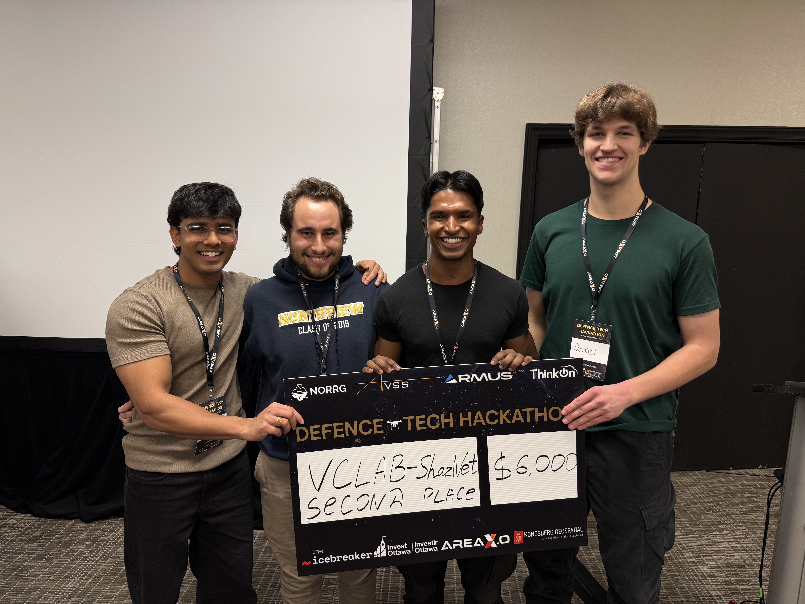

Introduction
ShazNet is a prototype acoustic intelligence system designed to identify small drones from audio alone—essentially a “Shazam for drones.” The system combines a FastAPI + PyTorch backend with a retro terminal-style web interface that supports real-time inference, waveform visualization, and live microphone streaming. Users can upload audio clips or stream directly through their mic to receive continuous predictions on which drone model is present.
This prototype was awarded 2nd Place at the 2025 Shazam for Drones Defence Hackathon.
Demo Video
How It Works
ShazNet processes raw audio to classify UAVs using a custom MelSpecTransformerVAE model. The system analyzes sounds either in full clips or in smaller temporal windows, allowing it to detect changes in drone type throughout a recording. Audio is converted into log-mel spectrograms, passed through a Transformer-based encoder, and then evaluated by a lightweight classifier built on top of the VAE’s latent representation.
The interface enables users to inspect and interact with audio clips through a retro terminal-style UI. Waveforms can be played, zoomed, and segmented for localized predictions. Long Temporal Inference (LTI) mode divides a full recording into fixed windows and overlays color-coded prediction bars across the waveform to show which drone is active at each moment. The system also supports real-time microphone streaming, providing continuous classification updates and rolling waveform visualization.
Because the frontend is model-agnostic, it can be paired with any backend checkpoint simply by dropping in a new .pt model file and a corresponding class_names.json. This makes ShazNet modular, extensible, and easy to adapt for future drone classification research.
My Contribution
My primary contribution to the project was designing, implementing, and training the Transformer-based backend model that powers ShazNet’s drone classification engine. I developed a custom MelSpecTransformerVAE architecture that processes log-mel spectrogram sequences and produces robust latent representations for downstream classification. The model was trained on multi-class UAV audio datasets and ultimately achieved the highest classification accuracy score in the entire event.
This backend became the core of the ShazNet system, enabling reliable segment-level inference, long temporal analysis, and real-time microphone classification. The performance of the Transformer VAE was a key factor in the project earning 2nd place at the 2025 Shazam for Drones Defence Hackathon.